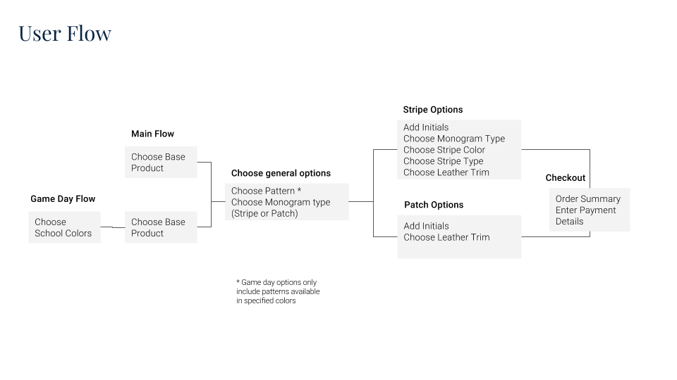

Barrington Gifts
After investing in SEO optimization and social ads, Barrington Gifts was confused why their increased traffic wasn't translating into increased sales. I helped them analyze their data, identify that the root cause was a poor mobile conversion rate, and help them completely redesign the user experience to be optimized on mobile.Jan 2018- March 2018
I consulted directly with the CEO of Barrington Gifts, independently conducting analytics research, designing and iterating on wireframes and creating specs for company's developer.
Identifying Existing Issues
Barrington Gifts specializes purses and accessories that customers can custom design by choosing their fabrics, leather trims, and adding monograms. This should be a fun, liberating experience, but the existing interface makes it frustrating, by forcing users to make key decisions early, and not change their mind. Additionally, the old, outdated visual interface of the site doesn't help make the situation any better, and scary warnings when users "fail" to follow a linear path turn people off.
Additionally, the poor optimization for mobile users makes it almost impossible for mobile users to successfully interact with the site- proven by the very low goal conversion rates based on Google Analytics data.


The user flow below consolidates the existing flow and makes it a much more consistent experience while maintaining the needed data structure required on the backend.
Lo-Fidelity Wireframes
I created four lo-fidelity wireframes, one for each of the two potential product types, on both desktop and mobile. I added simple animations with InVision in order to communicate the key interactions that users would have.

Feedback
Sharing the initial low-fidelity designs with key stakeholders revealed a few important issues to reconsider:
1. Users can be able to go back and change their decisions, but their data will be refreshed.
2. There is a strong marketing purpose for having the example bags in the most popular fabrics, rather than framing it purely as a design it yourself experience.
3. The design must be flexible enough to accommodate for changes in the backend flow- Barrington is adding new products in the summer, that will add increased decisions.